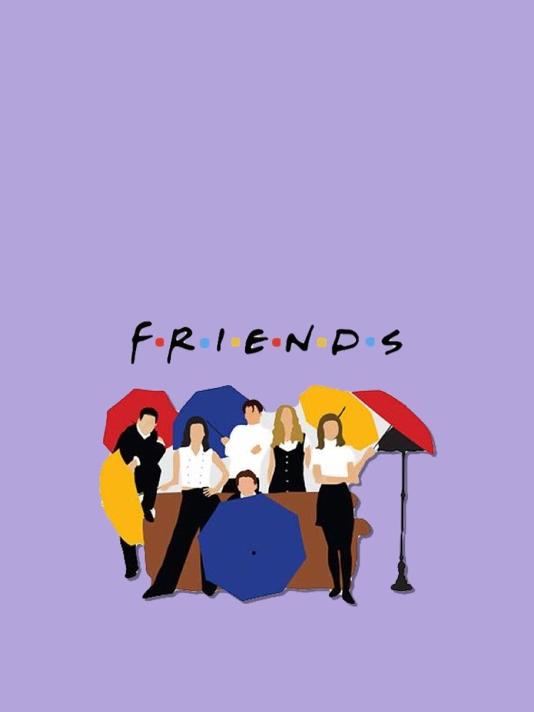
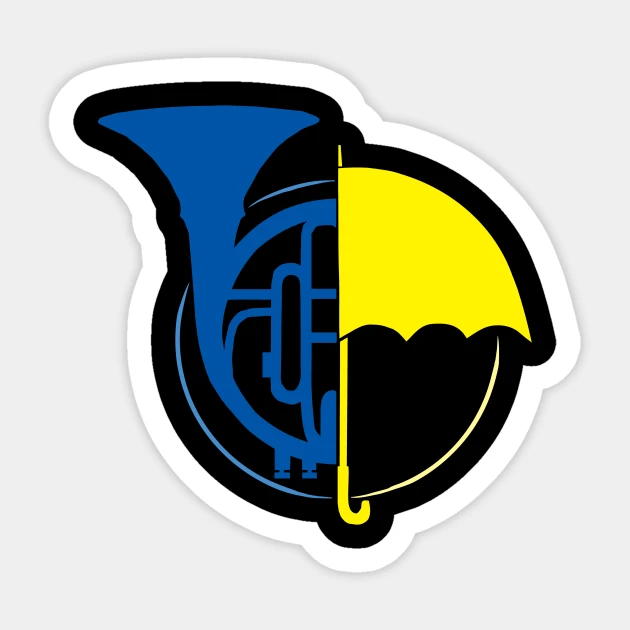
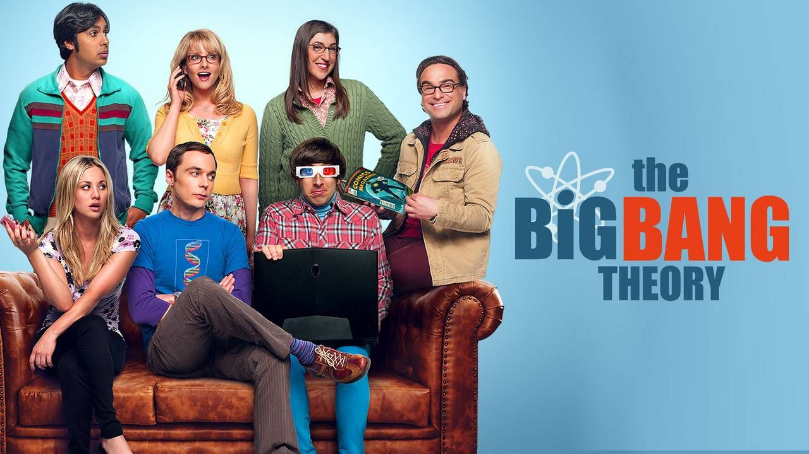

Friends is an American television sitcom created by David Crane and Marta Kauffman, which aired on NBC from September 22, 1994, to May 6, 2004, lasting ten seasons. With an ensemble cast starring Jennifer Aniston, Courteney Cox, Lisa Kudrow, Matt LeBlanc, Matthew Perry and David Schwimmer, the show revolves around six friends in their 20s and 30s who live in Manhattan, New York City. The series was produced by Bright/Kauffman/Crane Productions, in association with Warner Bros. Television. The original executive producers were Kevin S. Bright, Kauffman, and Crane.Kauffman and Crane began developing Friends under the working title Insomnia Cafe between November and December 1993. They presented the idea to Bright, and together they pitched a seven-page treatment of the show to NBC. After several script rewrites and changes, including title changes to Six of One and Friends Like Us, the series was finally named Friends.Filming took place at Warner Bros. Studios in Burbank, California. The show ranked within the top ten of the final television season ratings; it ultimately reached the number-one spot in its eighth season. The series finale aired on May 6, 2004, and was watched by around 52.5 million American viewers, making it the fifth-most-watched series finale in television history and the most-watched television episode of the 2000s.
Friends received acclaim throughout its run, becoming one of the most popular television shows of all time. The series was nominated for 62 Primetime Emmy Awards, winning the Outstanding Comedy Series award in 2002[10] for its eighth season. The show ranked no. 21 on TV Guide's 50 Greatest TV Shows of All Time, and no. 5 on Empire magazine's The 50 Greatest TV Shows of All Time. In 1997, the episode "The One with the Prom Video" was ranked no. 100 on TV Guide's 100 Greatest Episodes of All-Time.In 2013, Friends ranked no. 24 on the Writers Guild of America's 101 Best Written TV Series of All Time, and no. 28 on TV Guide's 60 Best TV Series of All Time.The sitcom's cast members returned for a reunion special aired on HBO Max on May 27, 2021.
Ratings-The table below shows the ratings of Friends in the United States, where it consistently ranked within the top ten of the final television season ratings."Rank" refers to how well Friends rated compared to other television series that aired during primetime hours of the corresponding television season. It is shown in relation to the total number of series airing on the then-six major English-language networks in a given season. "Viewers" refers to the average number of viewers for all original episodes, broadcast during the television season in the series' regular timeslot. The "season premiere" is the date that the first episode of the season aired, and the "season finale" is the date that the final episode of the season aired. Following the September 11 attacks, ratings increased 17% over the previous season.Awards-To maintain the series' ensemble format, the main cast members decided to enter themselves in the same acting categories for awards.Beginning with the series' eighth season, the actors decided to submit themselves in the lead actor balloting, rather than in the supporting actor fields, The series was nominated for 62 Primetime Emmy Awards, winning six.Aniston and Kudrow are the only main cast members to win an Emmy, while Cox is the only actor not to be nominated. The series won the Primetime Emmy Award for Outstanding Comedy Series in 2002, receiving nominations in 1995, 1996, 1999, 2000, and 2003.[104] The series also won an American Comedy Award,one GLAAD Media Award, one Golden Globe Award,three Logie Awards, six People's Choice Awards, one Satellite Award, and one Screen Actors Guild Award.

How I Met Your Mother (often abbreviated as HIMYM) is an American sitcom, created by Craig Thomas and Carter Bays for CBS. The series, which aired from September 19, 2005 to March 31, 2014, follows the main character, Ted Mosby, and his group of friends in New York City's Manhattan. As a framing device, Ted, in 2030, recounts to his son, Luke, and daughter, Penny, the events from September 2005 to May 2013 that led him to meet their mother. How I Met Your Mother, is a joint production by Bays & Thomas Productions and 20th Century Fox Television and syndicated by 20th Television (now Disney-ABC Domestic Television).The series was loosely inspired by Thomas and Bays' friendship when they both lived in New York. The vast majority of episodes were directed by Pamela Fryman, who directed 196 episodes out of 208. The other directors were Rob Greenberg (7 episodes), Michael Shea (4 episodes), and Neil Patrick Harris (1 episode).Known for its unique structure, humor, and incorporation of dramatic elements, How I Met Your Mother was popular throughout its run. It initially received positive reviews upon release, but reception became more mixed as the seasons went on. The show was nominated for 91 awards and received 21. In 2010, Alyson Hannigan won the People's Choice Award for Favorite TV Comedy Actress. In 2012, seven years after its premiere, the series won the People's Choice Award for Favorite Network TV Comedy, and Neil Patrick Harris won the award for Favorite TV Comedy Actor twice.
The show's highest viewed episode was the series finale, "Last Forever", watched by 13.13 million viewers.Previously, the most viewed episode was the season 1 episode "The Pineapple Incident", watched by 12.3 million viewers. The lowest-viewed episode was the season 6 episode "Landmarks", watched by 6.4 million viewers, approximately 52% of the show's previous series high, and approximately 49% of the show's finale viewership.
The series follows the adventures of Ted Mosby (played by Josh Radnor) and his love life as a single man. His stories are narrated by Bob Saget as Ted Mosby 25 years later as he tells them to his adolescent children. The story goes into a flashback and starts in 2005 with 27-year-old Ted Mosby living in New York City and working as an architect. The narrative deals primarily with his best friends, including the long-lasting couple Marshall Eriksen (Jason Segel) and Lily Aldrin (Alyson Hannigan), womanizing playboy Barney Stinson (Neil Patrick Harris), and Canadian news reporter Robin Scherbatsky (Cobie Smulders); all of the characters' lives are entwined. The series explores many storylines, including a "will they or won't they" relationship between Robin and each of the two single male friends, Marshall and Lily's relationship, and the ups and downs of the characters' careers.

The Big Bang Theory is an American television sitcom created by Chuck Lorre and Bill Prady, both of whom served as executive producers on the series, along with Steven Molaro. The three of them also served as head writers. It premiered on CBS on September 24, 2007, and concluded on May 16, 2019, having broadcast 279 episodes over 12 seasons.The show originally centered on five characters living in Pasadena, California: Leonard Hofstadter (Johnny Galecki) and Sheldon Cooper (Jim Parsons), both physicists at Caltech, who share an apartment; Penny (Kaley Cuoco), a waitress and aspiring actress who lives across the hall; and Leonard and Sheldon's similarly geeky and socially awkward friends and coworkers, aerospace engineer Howard Wolowitz (Simon Helberg) and astrophysicist Raj Koothrappali (Kunal Nayyar).Over time, supporting characters were promoted to starring roles, including neuroscientist Amy Farrah Fowler (Mayim Bialik), microbiologist Bernadette Rostenkowski (Melissa Rauch), and comic book store owner Stuart Bloom (Kevin Sussman).The show was filmed in front of a live audience and produced by Chuck Lorre Productions and Warner Bros. Television. It received mixed reviews throughout its first season, but reception was more favorable in the second and third seasons. Despite early mixed reviews, seven seasons were ranked within the top ten of the final season ratings, and it ultimately reached the no. 1 spot in its eleventh season. It was nominated for the Emmy Award for Outstanding Comedy Series from 2011 to 2014 and won the Emmy Award for Outstanding Lead Actor in a Comedy Series four times for Parsons. In total, it won seven Emmy Awards from 46 nominations. Parsons also won the Golden Globe for Best Actor in a Television Comedy Series in 2011. In 2017, the series spawned a prequel series, Young Sheldon, based on Parsons' character Sheldon Cooper; it also airs on CBS.
Science Consultants-David Saltzberg, a professor of physics and astronomy at the University of California, Los Angeles, checked scripts and provided dialogue, mathematics equations, and diagrams used as props. According to executive producer/cocreator Bill Prady, "We're working on giving Sheldon an actual problem that he's going to be working on throughout the [first] season so there's actual progress to the boards ... We worked hard to get all the science right."" Saltzberg, who has a Ph.D. in physics, served as the science consultant for the show for six seasons and attended every taping. He saw early versions of scripts that needed scientific information added to them, and he also pointed out where the writers, despite their knowledge of science, had made a mistake. He was usually not needed during a taping unless a lot of science, and especially the whiteboard, was involved.Saltzberg sometimes needed assistance on biology from Mayim Bialik, who has a Ph.D. in neuroscience.